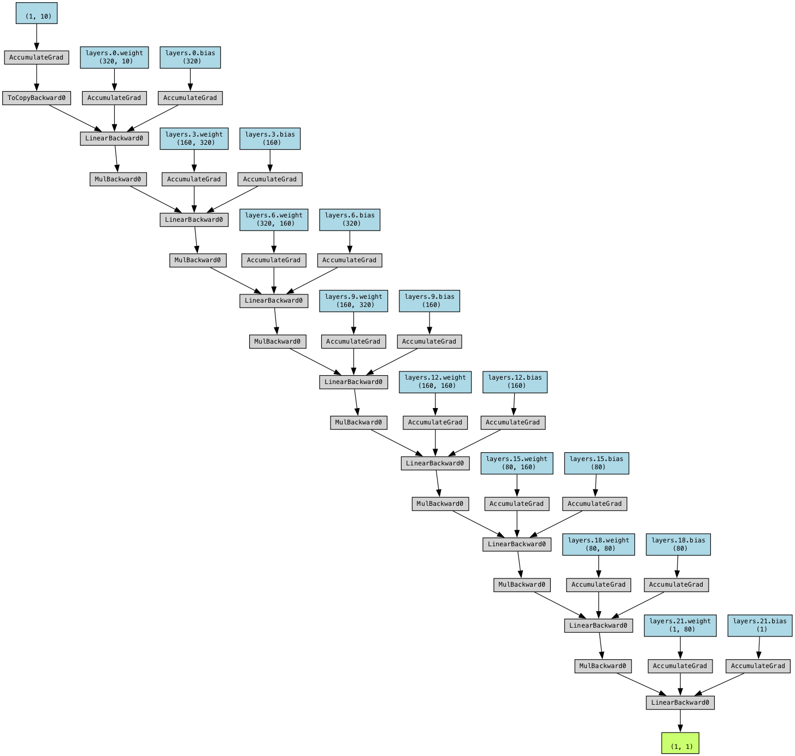

# from spotpython.utils.init import fun_control_init
# from spotpython.data.diabetes import Diabetes
# from spotpython.hyperdict.light_hyper_dict import LightHyperDict
# from spotpython.hyperparameters.values import (
# get_default_hyperparameters_as_array, get_one_config_from_X)
# from spotpython.plot.xai import (get_activations, get_gradients, get_weights, plot_nn_values_hist, plot_nn_values_scatter, visualize_weights, visualize_gradients, visualize_activations, visualize_gradient_distributions, visualize_weights_distributions)
# data_set = Diabetes()
# fun_control = fun_control_init(
# data_set=data_set,
# _L_in=10,
# _L_out=1,
# _torchmetric="mean_squared_error",
# core_model_name="light.regression.NNLinearRegressor",
# hyperdict=LightHyperDict,
# )
# X = get_default_hyperparameters_as_array(fun_control)
# config = get_one_config_from_X(X, fun_control)
# _L_in = fun_control["_L_in"]
# _L_out = fun_control["_L_out"]
# _torchmetric = fun_control["_torchmetric"]
# model = fun_control["core_model"](**config, _L_in=_L_in, _L_out=_L_out, _torchmetric=_torchmetric)
# batch_size=config["batch_size"]30 Explainable AI with SpotPython and Pytorch
30.1 Explainable AI with SpotPython and Pytorch
import warnings
warnings.filterwarnings("ignore")from spotpython.data.diabetes import Diabetes
from spotpython.hyperdict.light_hyper_dict import LightHyperDict
from spotpython.fun.hyperlight import HyperLight
from spotpython.utils.init import (fun_control_init, surrogate_control_init, design_control_init)
from spotpython.utils.eda import gen_design_table
from spotpython.spot import spot
from spotpython.utils.file import get_experiment_filename
from spotpython.hyperparameters.values import set_hyperparameter
from math import inf
PREFIX="602"
data_set = Diabetes()
fun_control = fun_control_init(
save_experiment=True,
PREFIX=PREFIX,
fun_evals=inf,
max_time=60,
data_set = data_set,
core_model_name="light.regression.NNLinearRegressor",
hyperdict=LightHyperDict,
_L_in=10,
_L_out=1)
fun = HyperLight().fun
set_hyperparameter(fun_control, "optimizer", [ "Adadelta", "Adam", "Adamax"])
set_hyperparameter(fun_control, "l1", [2,3])
set_hyperparameter(fun_control, "epochs", [10,12])
set_hyperparameter(fun_control, "batch_size", [4,11])
set_hyperparameter(fun_control, "dropout_prob", [0.0, 0.025])
set_hyperparameter(fun_control, "patience", [2,9])
design_control = design_control_init(init_size=20)
spot_tuner = spot.Spot(fun=fun,fun_control=fun_control, design_control=design_control)module_name: light
submodule_name: regression
model_name: NNLinearRegressor30.1.1 Running the Hyperparameter Tuning or Loading the Existing Model
from spotpython.utils.file import get_experiment_filename, load_experiment
import os
overwrite = False
filename = get_experiment_filename(PREFIX)
if os.path.exists(filename) and not overwrite:
(spot_tuner, fun_control, design_control,
surrogate_control, optimizer_control) = load_experiment(filename)
else:
print("File does not exist or overwrite is True. Starting new experiment.")
res = spot_tuner.run()File does not exist or overwrite is True. Starting new experiment.train_model result: {'val_loss': 22056.22265625, 'hp_metric': 22056.22265625}train_model result: {'val_loss': 5421.2822265625, 'hp_metric': 5421.2822265625}train_model result: {'val_loss': 5075.51953125, 'hp_metric': 5075.51953125}train_model result: {'val_loss': 16699.515625, 'hp_metric': 16699.515625}train_model result: {'val_loss': 21799.08984375, 'hp_metric': 21799.08984375}train_model result: {'val_loss': 23626.66015625, 'hp_metric': 23626.66015625}train_model result: {'val_loss': 10167.865234375, 'hp_metric': 10167.865234375}train_model result: {'val_loss': nan, 'hp_metric': nan}train_model result: {'val_loss': 3546.109375, 'hp_metric': 3546.109375}train_model result: {'val_loss': 12049.8369140625, 'hp_metric': 12049.8369140625}train_model result: {'val_loss': 3359.73388671875, 'hp_metric': 3359.73388671875}train_model result: {'val_loss': 4482.98046875, 'hp_metric': 4482.98046875}train_model result: {'val_loss': 22520.076171875, 'hp_metric': 22520.076171875}train_model result: {'val_loss': 3113.805419921875, 'hp_metric': 3113.805419921875}train_model result: {'val_loss': 3594.652099609375, 'hp_metric': 3594.652099609375}train_model result: {'val_loss': 11548.4453125, 'hp_metric': 11548.4453125}train_model result: {'val_loss': 17946.408203125, 'hp_metric': 17946.408203125}train_model result: {'val_loss': 4913.86279296875, 'hp_metric': 4913.86279296875}train_model result: {'val_loss': 23001.83203125, 'hp_metric': 23001.83203125}
train_model result: {'val_loss': 24103.966796875, 'hp_metric': 24103.966796875}train_model result: {'val_loss': 3410.49755859375, 'hp_metric': 3410.49755859375}
spotpython tuning: 3113.805419921875 [----------] 0.12% train_model result: {'val_loss': 3655.554443359375, 'hp_metric': 3655.554443359375}
spotpython tuning: 3113.805419921875 [----------] 0.22% train_model result: {'val_loss': 3086.689453125, 'hp_metric': 3086.689453125}
spotpython tuning: 3086.689453125 [----------] 0.54% train_model result: {'val_loss': 3115.0791015625, 'hp_metric': 3115.0791015625}
spotpython tuning: 3086.689453125 [----------] 0.68% train_model result: {'val_loss': 16552.099609375, 'hp_metric': 16552.099609375}
spotpython tuning: 3086.689453125 [----------] 2.08% train_model result: {'val_loss': 16725.634765625, 'hp_metric': 16725.634765625}
spotpython tuning: 3086.689453125 [----------] 4.43% train_model result: {'val_loss': 3415.931640625, 'hp_metric': 3415.931640625}
spotpython tuning: 3086.689453125 [----------] 4.57% train_model result: {'val_loss': 3121.2958984375, 'hp_metric': 3121.2958984375}
spotpython tuning: 3086.689453125 [----------] 4.94% train_model result: {'val_loss': 3556.72265625, 'hp_metric': 3556.72265625}
spotpython tuning: 3086.689453125 [#---------] 5.20% train_model result: {'val_loss': 3865.603759765625, 'hp_metric': 3865.603759765625}
spotpython tuning: 3086.689453125 [#---------] 5.39% train_model result: {'val_loss': 3084.66845703125, 'hp_metric': 3084.66845703125}
spotpython tuning: 3084.66845703125 [#---------] 5.99% train_model result: {'val_loss': 3228.87158203125, 'hp_metric': 3228.87158203125}
spotpython tuning: 3084.66845703125 [#---------] 6.24% train_model result: {'val_loss': 3237.646240234375, 'hp_metric': 3237.646240234375}
spotpython tuning: 3084.66845703125 [#---------] 6.60% train_model result: {'val_loss': 3160.732421875, 'hp_metric': 3160.732421875}
spotpython tuning: 3084.66845703125 [#---------] 6.85% train_model result: {'val_loss': 3086.89501953125, 'hp_metric': 3086.89501953125}
spotpython tuning: 3084.66845703125 [#---------] 7.09% train_model result: {'val_loss': 3026.4599609375, 'hp_metric': 3026.4599609375}
spotpython tuning: 3026.4599609375 [#---------] 7.40% train_model result: {'val_loss': 3036.19091796875, 'hp_metric': 3036.19091796875}
spotpython tuning: 3026.4599609375 [#---------] 7.95% train_model result: {'val_loss': 3038.229248046875, 'hp_metric': 3038.229248046875}
spotpython tuning: 3026.4599609375 [#---------] 8.30% train_model result: {'val_loss': 3043.13330078125, 'hp_metric': 3043.13330078125}
spotpython tuning: 3026.4599609375 [#---------] 8.58% train_model result: {'val_loss': 21530.16015625, 'hp_metric': 21530.16015625}
spotpython tuning: 3026.4599609375 [#---------] 9.86% train_model result: {'val_loss': 3197.482666015625, 'hp_metric': 3197.482666015625}
spotpython tuning: 3026.4599609375 [#---------] 10.50% train_model result: {'val_loss': 3169.0849609375, 'hp_metric': 3169.0849609375}
spotpython tuning: 3026.4599609375 [#---------] 10.96% train_model result: {'val_loss': 2965.410400390625, 'hp_metric': 2965.410400390625}
spotpython tuning: 2965.410400390625 [#---------] 11.53% train_model result: {'val_loss': 3317.4208984375, 'hp_metric': 3317.4208984375}
spotpython tuning: 2965.410400390625 [#---------] 11.80% train_model result: {'val_loss': 3009.93798828125, 'hp_metric': 3009.93798828125}
spotpython tuning: 2965.410400390625 [#---------] 12.17% train_model result: {'val_loss': 3052.094970703125, 'hp_metric': 3052.094970703125}
spotpython tuning: 2965.410400390625 [#---------] 12.67% train_model result: {'val_loss': 3022.53173828125, 'hp_metric': 3022.53173828125}
spotpython tuning: 2965.410400390625 [#---------] 13.10% train_model result: {'val_loss': 3214.52294921875, 'hp_metric': 3214.52294921875}
spotpython tuning: 2965.410400390625 [#---------] 13.52% train_model result: {'val_loss': 3076.77880859375, 'hp_metric': 3076.77880859375}
spotpython tuning: 2965.410400390625 [#---------] 13.85% train_model result: {'val_loss': 3123.95068359375, 'hp_metric': 3123.95068359375}
spotpython tuning: 2965.410400390625 [#---------] 14.07% train_model result: {'val_loss': 4591.0947265625, 'hp_metric': 4591.0947265625}
spotpython tuning: 2965.410400390625 [#---------] 14.21% train_model result: {'val_loss': 3269.2431640625, 'hp_metric': 3269.2431640625}
spotpython tuning: 2965.410400390625 [#---------] 14.67% train_model result: {'val_loss': 3178.234619140625, 'hp_metric': 3178.234619140625}
spotpython tuning: 2965.410400390625 [##--------] 15.28% train_model result: {'val_loss': 23538.376953125, 'hp_metric': 23538.376953125}
spotpython tuning: 2965.410400390625 [##--------] 16.78% train_model result: {'val_loss': 3357.80419921875, 'hp_metric': 3357.80419921875}
spotpython tuning: 2965.410400390625 [##--------] 16.94% train_model result: {'val_loss': 3104.7841796875, 'hp_metric': 3104.7841796875}
spotpython tuning: 2965.410400390625 [##--------] 17.26% train_model result: {'val_loss': 3196.4404296875, 'hp_metric': 3196.4404296875}
spotpython tuning: 2965.410400390625 [##--------] 17.55% train_model result: {'val_loss': 3225.98095703125, 'hp_metric': 3225.98095703125}
spotpython tuning: 2965.410400390625 [##--------] 17.75% train_model result: {'val_loss': 20020.26953125, 'hp_metric': 20020.26953125}
spotpython tuning: 2965.410400390625 [##--------] 17.89% train_model result: {'val_loss': 4334.912109375, 'hp_metric': 4334.912109375}
spotpython tuning: 2965.410400390625 [##--------] 18.28% train_model result: {'val_loss': 3323.570068359375, 'hp_metric': 3323.570068359375}
spotpython tuning: 2965.410400390625 [##--------] 18.55% train_model result: {'val_loss': 4331.60546875, 'hp_metric': 4331.60546875}
spotpython tuning: 2965.410400390625 [##--------] 18.65% train_model result: {'val_loss': 3319.012939453125, 'hp_metric': 3319.012939453125}
spotpython tuning: 2965.410400390625 [##--------] 18.87% train_model result: {'val_loss': 18398.486328125, 'hp_metric': 18398.486328125}
spotpython tuning: 2965.410400390625 [##--------] 20.78% train_model result: {'val_loss': 3396.87060546875, 'hp_metric': 3396.87060546875}
spotpython tuning: 2965.410400390625 [##--------] 22.90% train_model result: {'val_loss': 3536.6416015625, 'hp_metric': 3536.6416015625}
spotpython tuning: 2965.410400390625 [##--------] 23.15% train_model result: {'val_loss': 3013.482666015625, 'hp_metric': 3013.482666015625}
spotpython tuning: 2965.410400390625 [##--------] 23.43% train_model result: {'val_loss': 21108.685546875, 'hp_metric': 21108.685546875}
spotpython tuning: 2965.410400390625 [##--------] 24.99% train_model result: {'val_loss': 3075.266845703125, 'hp_metric': 3075.266845703125}
spotpython tuning: 2965.410400390625 [###-------] 25.39% train_model result: {'val_loss': 3318.114990234375, 'hp_metric': 3318.114990234375}
spotpython tuning: 2965.410400390625 [###-------] 25.56% train_model result: {'val_loss': 2995.48876953125, 'hp_metric': 2995.48876953125}
spotpython tuning: 2965.410400390625 [###-------] 25.98% train_model result: {'val_loss': 21076.146484375, 'hp_metric': 21076.146484375}
spotpython tuning: 2965.410400390625 [###-------] 27.51% train_model result: {'val_loss': 3167.697509765625, 'hp_metric': 3167.697509765625}
spotpython tuning: 2965.410400390625 [###-------] 27.66% train_model result: {'val_loss': 4794.4228515625, 'hp_metric': 4794.4228515625}
spotpython tuning: 2965.410400390625 [###-------] 27.85% train_model result: {'val_loss': 3713.16357421875, 'hp_metric': 3713.16357421875}
spotpython tuning: 2965.410400390625 [###-------] 27.97% train_model result: {'val_loss': 4270.92236328125, 'hp_metric': 4270.92236328125}
spotpython tuning: 2965.410400390625 [###-------] 28.13% train_model result: {'val_loss': 2951.8466796875, 'hp_metric': 2951.8466796875}
spotpython tuning: 2951.8466796875 [###-------] 28.56% train_model result: {'val_loss': 3515.006103515625, 'hp_metric': 3515.006103515625}
spotpython tuning: 2951.8466796875 [###-------] 28.78% train_model result: {'val_loss': 3034.930419921875, 'hp_metric': 3034.930419921875}
spotpython tuning: 2951.8466796875 [###-------] 29.33% train_model result: {'val_loss': 3350.47216796875, 'hp_metric': 3350.47216796875}
spotpython tuning: 2951.8466796875 [###-------] 29.93% train_model result: {'val_loss': 3929.336181640625, 'hp_metric': 3929.336181640625}
spotpython tuning: 2951.8466796875 [###-------] 30.21% train_model result: {'val_loss': 3926.615234375, 'hp_metric': 3926.615234375}
spotpython tuning: 2951.8466796875 [###-------] 30.40% train_model result: {'val_loss': 3022.998046875, 'hp_metric': 3022.998046875}
spotpython tuning: 2951.8466796875 [###-------] 31.04% train_model result: {'val_loss': 4630.28759765625, 'hp_metric': 4630.28759765625}
spotpython tuning: 2951.8466796875 [###-------] 31.18% train_model result: {'val_loss': 3465.66455078125, 'hp_metric': 3465.66455078125}
spotpython tuning: 2951.8466796875 [###-------] 31.32% train_model result: {'val_loss': 3424.010009765625, 'hp_metric': 3424.010009765625}
spotpython tuning: 2951.8466796875 [###-------] 31.72% train_model result: {'val_loss': 3041.7119140625, 'hp_metric': 3041.7119140625}
spotpython tuning: 2951.8466796875 [###-------] 33.74% train_model result: {'val_loss': 3265.46923828125, 'hp_metric': 3265.46923828125}
spotpython tuning: 2951.8466796875 [###-------] 34.28% train_model result: {'val_loss': 14749.4638671875, 'hp_metric': 14749.4638671875}
spotpython tuning: 2951.8466796875 [####------] 40.17% train_model result: {'val_loss': 2909.064208984375, 'hp_metric': 2909.064208984375}
spotpython tuning: 2909.064208984375 [####------] 40.53% train_model result: {'val_loss': 23971.439453125, 'hp_metric': 23971.439453125}
spotpython tuning: 2909.064208984375 [####------] 42.89% train_model result: {'val_loss': 3440.880859375, 'hp_metric': 3440.880859375}
spotpython tuning: 2909.064208984375 [####------] 43.07% train_model result: {'val_loss': 3076.4833984375, 'hp_metric': 3076.4833984375}
spotpython tuning: 2909.064208984375 [####------] 43.30% train_model result: {'val_loss': 3490.239501953125, 'hp_metric': 3490.239501953125}
spotpython tuning: 2909.064208984375 [####------] 43.66% train_model result: {'val_loss': 17244.314453125, 'hp_metric': 17244.314453125}
spotpython tuning: 2909.064208984375 [#####-----] 45.21% train_model result: {'val_loss': 3224.001220703125, 'hp_metric': 3224.001220703125}
spotpython tuning: 2909.064208984375 [#####-----] 45.45% train_model result: {'val_loss': 3350.958251953125, 'hp_metric': 3350.958251953125}
spotpython tuning: 2909.064208984375 [#####-----] 45.68% train_model result: {'val_loss': 23957.4765625, 'hp_metric': 23957.4765625}
spotpython tuning: 2909.064208984375 [#####-----] 46.80% train_model result: {'val_loss': 2931.12109375, 'hp_metric': 2931.12109375}
spotpython tuning: 2909.064208984375 [#####-----] 47.74% train_model result: {'val_loss': 3322.469970703125, 'hp_metric': 3322.469970703125}
spotpython tuning: 2909.064208984375 [#####-----] 47.99% train_model result: {'val_loss': 5001.998046875, 'hp_metric': 5001.998046875}
spotpython tuning: 2909.064208984375 [#####-----] 49.55% train_model result: {'val_loss': 3380.688720703125, 'hp_metric': 3380.688720703125}
spotpython tuning: 2909.064208984375 [#####-----] 49.73% train_model result: {'val_loss': 3270.785888671875, 'hp_metric': 3270.785888671875}
spotpython tuning: 2909.064208984375 [#####-----] 50.11% train_model result: {'val_loss': 3637.959228515625, 'hp_metric': 3637.959228515625}
spotpython tuning: 2909.064208984375 [#####-----] 50.29% train_model result: {'val_loss': 3064.440185546875, 'hp_metric': 3064.440185546875}
spotpython tuning: 2909.064208984375 [#####-----] 50.78% train_model result: {'val_loss': 21742.326171875, 'hp_metric': 21742.326171875}
spotpython tuning: 2909.064208984375 [#####-----] 52.41% train_model result: {'val_loss': 3169.49462890625, 'hp_metric': 3169.49462890625}
spotpython tuning: 2909.064208984375 [#####-----] 52.74% train_model result: {'val_loss': 3397.87548828125, 'hp_metric': 3397.87548828125}
spotpython tuning: 2909.064208984375 [#####-----] 52.91% train_model result: {'val_loss': 3566.107421875, 'hp_metric': 3566.107421875}
spotpython tuning: 2909.064208984375 [#####-----] 53.05% train_model result: {'val_loss': 3543.63916015625, 'hp_metric': 3543.63916015625}
spotpython tuning: 2909.064208984375 [#####-----] 53.53% train_model result: {'val_loss': 3638.657958984375, 'hp_metric': 3638.657958984375}
spotpython tuning: 2909.064208984375 [#####-----] 53.72% train_model result: {'val_loss': 2980.272705078125, 'hp_metric': 2980.272705078125}
spotpython tuning: 2909.064208984375 [######----] 55.08% train_model result: {'val_loss': 3488.87109375, 'hp_metric': 3488.87109375}
spotpython tuning: 2909.064208984375 [######----] 55.75% train_model result: {'val_loss': 3436.1337890625, 'hp_metric': 3436.1337890625}
spotpython tuning: 2909.064208984375 [######----] 55.88% train_model result: {'val_loss': 23753.46875, 'hp_metric': 23753.46875}
spotpython tuning: 2909.064208984375 [######----] 61.46% train_model result: {'val_loss': 3034.087158203125, 'hp_metric': 3034.087158203125}
spotpython tuning: 2909.064208984375 [######----] 62.04% train_model result: {'val_loss': 13915.7421875, 'hp_metric': 13915.7421875}
spotpython tuning: 2909.064208984375 [######----] 63.45% train_model result: {'val_loss': 3614.07275390625, 'hp_metric': 3614.07275390625}
spotpython tuning: 2909.064208984375 [######----] 63.65% train_model result: {'val_loss': 3021.754638671875, 'hp_metric': 3021.754638671875}
spotpython tuning: 2909.064208984375 [######----] 64.19% train_model result: {'val_loss': 3035.8623046875, 'hp_metric': 3035.8623046875}
spotpython tuning: 2909.064208984375 [#######---] 66.13% train_model result: {'val_loss': 3357.690673828125, 'hp_metric': 3357.690673828125}
spotpython tuning: 2909.064208984375 [#######---] 66.30% train_model result: {'val_loss': 3041.24267578125, 'hp_metric': 3041.24267578125}
spotpython tuning: 2909.064208984375 [#######---] 67.82% train_model result: {'val_loss': 2952.029296875, 'hp_metric': 2952.029296875}
spotpython tuning: 2909.064208984375 [#######---] 68.86% train_model result: {'val_loss': 3339.974365234375, 'hp_metric': 3339.974365234375}
spotpython tuning: 2909.064208984375 [#######---] 70.22% train_model result: {'val_loss': 4363.97509765625, 'hp_metric': 4363.97509765625}
spotpython tuning: 2909.064208984375 [#######---] 71.76% train_model result: {'val_loss': 3035.2900390625, 'hp_metric': 3035.2900390625}
spotpython tuning: 2909.064208984375 [#######---] 72.13% train_model result: {'val_loss': 2941.04443359375, 'hp_metric': 2941.04443359375}
spotpython tuning: 2909.064208984375 [#######---] 72.46% train_model result: {'val_loss': 3057.68212890625, 'hp_metric': 3057.68212890625}
spotpython tuning: 2909.064208984375 [#######---] 73.25% train_model result: {'val_loss': 3551.013671875, 'hp_metric': 3551.013671875}
spotpython tuning: 2909.064208984375 [#######---] 73.60% train_model result: {'val_loss': 3095.53662109375, 'hp_metric': 3095.53662109375}
spotpython tuning: 2909.064208984375 [#######---] 74.07% train_model result: {'val_loss': 3238.558349609375, 'hp_metric': 3238.558349609375}
spotpython tuning: 2909.064208984375 [#######---] 74.76% train_model result: {'val_loss': 3052.75732421875, 'hp_metric': 3052.75732421875}
spotpython tuning: 2909.064208984375 [########--] 76.03% train_model result: {'val_loss': 3033.0556640625, 'hp_metric': 3033.0556640625}
spotpython tuning: 2909.064208984375 [########--] 76.62% train_model result: {'val_loss': 2994.04443359375, 'hp_metric': 2994.04443359375}
spotpython tuning: 2909.064208984375 [########--] 78.10% train_model result: {'val_loss': 3440.236083984375, 'hp_metric': 3440.236083984375}
spotpython tuning: 2909.064208984375 [########--] 78.26% train_model result: {'val_loss': 3077.481689453125, 'hp_metric': 3077.481689453125}
spotpython tuning: 2909.064208984375 [########--] 78.78% train_model result: {'val_loss': 3457.84619140625, 'hp_metric': 3457.84619140625}
spotpython tuning: 2909.064208984375 [########--] 78.96% train_model result: {'val_loss': 3569.07568359375, 'hp_metric': 3569.07568359375}
spotpython tuning: 2909.064208984375 [########--] 79.15% train_model result: {'val_loss': 23129.01953125, 'hp_metric': 23129.01953125}
spotpython tuning: 2909.064208984375 [#########-] 85.13% train_model result: {'val_loss': 3499.42333984375, 'hp_metric': 3499.42333984375}
spotpython tuning: 2909.064208984375 [#########-] 85.30% train_model result: {'val_loss': 3119.489501953125, 'hp_metric': 3119.489501953125}
spotpython tuning: 2909.064208984375 [#########-] 86.18% train_model result: {'val_loss': 19494.912109375, 'hp_metric': 19494.912109375}
spotpython tuning: 2909.064208984375 [#########-] 87.34% train_model result: {'val_loss': 24034.43359375, 'hp_metric': 24034.43359375}
spotpython tuning: 2909.064208984375 [#########-] 88.80% train_model result: {'val_loss': nan, 'hp_metric': nan}
train_model result: {'val_loss': 3083.78466796875, 'hp_metric': 3083.78466796875}
spotpython tuning: 2909.064208984375 [#########-] 89.69% train_model result: {'val_loss': 2989.411376953125, 'hp_metric': 2989.411376953125}
spotpython tuning: 2909.064208984375 [#########-] 90.18% train_model result: {'val_loss': 3059.3349609375, 'hp_metric': 3059.3349609375}
spotpython tuning: 2909.064208984375 [#########-] 91.22% train_model result: {'val_loss': 3591.304931640625, 'hp_metric': 3591.304931640625}
spotpython tuning: 2909.064208984375 [#########-] 91.35% train_model result: {'val_loss': 21075.7734375, 'hp_metric': 21075.7734375}
spotpython tuning: 2909.064208984375 [#########-] 92.83% train_model result: {'val_loss': 3112.98388671875, 'hp_metric': 3112.98388671875}
spotpython tuning: 2909.064208984375 [#########-] 93.48% train_model result: {'val_loss': 10455.4169921875, 'hp_metric': 10455.4169921875}
spotpython tuning: 2909.064208984375 [##########] 95.82% train_model result: {'val_loss': 3503.7998046875, 'hp_metric': 3503.7998046875}
spotpython tuning: 2909.064208984375 [##########] 95.93% train_model result: {'val_loss': 3315.9775390625, 'hp_metric': 3315.9775390625}
spotpython tuning: 2909.064208984375 [##########] 96.08% train_model result: {'val_loss': 21075.7734375, 'hp_metric': 21075.7734375}
spotpython tuning: 2909.064208984375 [##########] 97.54% train_model result: {'val_loss': 2978.76416015625, 'hp_metric': 2978.76416015625}
spotpython tuning: 2909.064208984375 [##########] 97.87% train_model result: {'val_loss': 3015.313720703125, 'hp_metric': 3015.313720703125}
spotpython tuning: 2909.064208984375 [##########] 98.13% train_model result: {'val_loss': 3229.32861328125, 'hp_metric': 3229.32861328125}
spotpython tuning: 2909.064208984375 [##########] 98.48% train_model result: {'val_loss': 3923.497314453125, 'hp_metric': 3923.497314453125}
spotpython tuning: 2909.064208984375 [##########] 98.55% train_model result: {'val_loss': 3321.36669921875, 'hp_metric': 3321.36669921875}
spotpython tuning: 2909.064208984375 [##########] 98.76% train_model result: {'val_loss': 2923.661376953125, 'hp_metric': 2923.661376953125}
spotpython tuning: 2909.064208984375 [##########] 99.55% train_model result: {'val_loss': 3857.859130859375, 'hp_metric': 3857.859130859375}
spotpython tuning: 2909.064208984375 [##########] 100.00% Done...
Experiment saved to spot_602_experiment.pickle30.1.2 Results from the Hyperparameter Tuning Experiment
- After the hyperparameter tuning is finished, the following information is available:
- the
spot_tunerobject and the associated fun_controldictionary
- the
res = spot_tuner.print_results(print_screen=True)min y: 2909.064208984375
l1: 3.0
epochs: 11.0
batch_size: 11.0
act_fn: 5.0
optimizer: 2.0
dropout_prob: 0.025
lr_mult: 10.0
patience: 7.0
batch_norm: 0.0
initialization: 2.030.1.2.1 Getting the Best Model, i.e, the Tuned Architecture
- The method
get_tuned_architecture[DOC] returns the best model architecture found during the hyperparameter tuning. - It returns the transformed values, i.e.,
batch_size = 2^xif the hyperparameterbatch_sizewas transformed with thetransform_power_2_intfunction.
from spotpython.hyperparameters.values import get_tuned_architecture
import pprint
config = get_tuned_architecture(spot_tuner, fun_control)
pprint.pprint(config){'act_fn': Swish(),
'batch_norm': False,
'batch_size': 2048,
'dropout_prob': 0.025,
'epochs': 2048,
'initialization': 'kaiming_normal',
'l1': 8,
'lr_mult': 10.0,
'optimizer': 'Adamax',
'patience': 128}- Note:
get_tuned_architecturehas the optionforce_minXwhich does not have any effect in this case.
from spotpython.hyperparameters.values import get_tuned_architecture
config = get_tuned_architecture(spot_tuner, fun_control, force_minX=True)
pprint.pprint(config){'act_fn': Swish(),
'batch_norm': False,
'batch_size': 2048,
'dropout_prob': 0.025,
'epochs': 2048,
'initialization': 'kaiming_normal',
'l1': 8,
'lr_mult': 10.0,
'optimizer': 'Adamax',
'patience': 128}30.1.3 Training the Tuned Architecture on the Test Data
- Since we are interested in the explainability of the model, we will train the tuned architecture on the test data.
spotpythons’stest_modelfunction [DOC] is used to train the model on the test data.- Note: Until now, we do not use any information about the NN’s weights and biases. Only the architecture, which is available as the
config, is used. spotpythonused the TensorBoard logger to save the training process in the./runsdirectory. Therefore, we have to enable the TensorBoard logger in thefun_controldictionary. To get a clean start, we also set theTENSORBOARD_CLEANflag toTrue.
from spotpython.light.testmodel import test_model
from spotpython.light.loadmodel import load_light_from_checkpoint
fun_control.update({"TENSORBOARD_CLEAN": True})
fun_control.update({"tensorboard_log": True})
test_model(config, fun_control)┏━━━━━━━━━━━━━━━━━━━━━━━━━━━┳━━━━━━━━━━━━━━━━━━━━━━━━━━━┓ ┃ Test metric ┃ DataLoader 0 ┃ ┡━━━━━━━━━━━━━━━━━━━━━━━━━━━╇━━━━━━━━━━━━━━━━━━━━━━━━━━━┩ │ hp_metric │ 26948.734375 │ │ val_loss │ 26948.734375 │ └───────────────────────────┴───────────────────────────┘
test_model result: {'val_loss': 26948.734375, 'hp_metric': 26948.734375}(26948.734375, 26948.734375)model = load_light_from_checkpoint(config, fun_control)config: {'l1': 8, 'epochs': 2048, 'batch_size': 2048, 'act_fn': Swish(), 'optimizer': 'Adamax', 'dropout_prob': 0.025, 'lr_mult': 10.0, 'patience': 128, 'batch_norm': False, 'initialization': 'kaiming_normal'}
Loading model with 8_2048_2048_Swish_Adamax_0.025_10.0_128_False_kaiming_normal_TEST from runs/saved_models/8_2048_2048_Swish_Adamax_0.025_10.0_128_False_kaiming_normal_TEST/last.ckpt
Model: NNLinearRegressor(
(layers): Sequential(
(0): Linear(in_features=10, out_features=8, bias=True)
(1): Swish()
(2): Dropout(p=0.025, inplace=False)
(3): Linear(in_features=8, out_features=4, bias=True)
(4): Swish()
(5): Dropout(p=0.025, inplace=False)
(6): Linear(in_features=4, out_features=4, bias=True)
(7): Swish()
(8): Dropout(p=0.025, inplace=False)
(9): Linear(in_features=4, out_features=2, bias=True)
(10): Swish()
(11): Dropout(p=0.025, inplace=False)
(12): Linear(in_features=2, out_features=2, bias=True)
(13): Swish()
(14): Dropout(p=0.025, inplace=False)
(15): Linear(in_features=2, out_features=2, bias=True)
(16): Swish()
(17): Dropout(p=0.025, inplace=False)
(18): Linear(in_features=2, out_features=1, bias=True)
)
)30.1.3.0.1 Details of the Training Process on the Test Data
- The
test_modelmethod initializes the model with the tuned architecture as follows:
model = fun_control["core_model"](**config, _L_in=_L_in, _L_out=_L_out, _torchmetric=_torchmetric)Then, the Lightning Trainer is initialized with the
fun_controldictionary and the model as follows:trainer = L.Trainer( default_root_dir=os.path.join(fun_control["CHECKPOINT_PATH"], config_id), max_epochs=model.hparams.epochs, accelerator=fun_control["accelerator"], devices=fun_control["devices"], logger=TensorBoardLogger( save_dir=fun_control["TENSORBOARD_PATH"], version=config_id, default_hp_metric=True, log_graph=fun_control["log_graph"], ), callbacks=[ EarlyStopping(monitor="val_loss", patience=config["patience"], mode="min", strict=False, verbose=False), ModelCheckpoint( dirpath=os.path.join(fun_control["CHECKPOINT_PATH"], config_id), save_last=True ), ], enable_progress_bar=enable_progress_bar, ) trainer.fit(model=model, datamodule=dm) test_result = trainer.test(datamodule=dm, ckpt_path="last")As shown in the code above, the last checkpoint ist saved.
spotpython’s methodload_light_from_checkpointis used to load the last checkpoint and to get the model’s weights and biases. It requires thefun_controldictionary and theconfig_idas input to find the correct checkpoint.Now, the model is trained and the weights and biases are available.
pprint.pprint(model)NNLinearRegressor(
(layers): Sequential(
(0): Linear(in_features=10, out_features=8, bias=True)
(1): Swish()
(2): Dropout(p=0.025, inplace=False)
(3): Linear(in_features=8, out_features=4, bias=True)
(4): Swish()
(5): Dropout(p=0.025, inplace=False)
(6): Linear(in_features=4, out_features=4, bias=True)
(7): Swish()
(8): Dropout(p=0.025, inplace=False)
(9): Linear(in_features=4, out_features=2, bias=True)
(10): Swish()
(11): Dropout(p=0.025, inplace=False)
(12): Linear(in_features=2, out_features=2, bias=True)
(13): Swish()
(14): Dropout(p=0.025, inplace=False)
(15): Linear(in_features=2, out_features=2, bias=True)
(16): Swish()
(17): Dropout(p=0.025, inplace=False)
(18): Linear(in_features=2, out_features=1, bias=True)
)
)from torchviz import make_dot
import torch
x = torch.randn(1, 10).requires_grad_(True)
x = x.to("mps")
output = model(x)
dot = make_dot(output, params=dict(model.named_parameters()), show_attrs=True, show_saved=True)
dot.render("model_architecture", format="png")'model_architecture.png'
30.2 XAI Methods
spotpythonprovides methods to explain the model’s predictions. The following neural network elements can be analyzed:
30.2.1 Weights
- Weights are the parameters of the neural network that are learned from the data during training. They connect neurons between layers and determine the strength and direction of the signal sent from one neuron to another. The network adjusts the weights during training to minimize the error between the predicted output and the actual output.
- Interpretation of the weights: A high weight value indicates a strong influence of the input neuron on the output. Positive weights suggest a positive correlation, whereas negative weights suggest an inverse relationship between neurons.
30.2.2 Activations
- Activations are the outputs produced by neurons after applying an activation function to the weighted sum of inputs. The activation function (e.g., ReLU, sigmoid, tanh) adds non-linearity to the model, allowing it to learn more complex relationships.
- Interpretation of the activations: The value of activations indicates the intensity of the signal passed to the next layer. Certain activation patterns can highlight which features or parts of the data the network is focusing on.
30.2.3 Gradients
- Gradients are the partial derivatives of the loss function with respect to different parameters (weights) of the network. During backpropagation, gradients are used to update the weights in the direction that reduces the loss by methods like gradient descent.
- Interpretation of the gradients: The magnitude of the gradient indicates how much a parameter should change to reduce the error. A large gradient implies a steeper slope and a bigger update, while a small gradient suggests that the parameter is near an optimal point. If gradients are too small (vanishing gradient problem), the network may learn slowly or stop learning. If they are too large (exploding gradient problem), the updates may be unstable.
from spotpython.plot.xai import (get_activations, get_gradients, get_weights, visualize_weights, visualize_gradients, visualize_activations, visualize_gradient_distributions, visualize_weights_distributions, visualize_activations_distributions)
batch_size = config["batch_size"]30.2.4 Getting the Weights
from spotpython.plot.xai import sort_layers
weights = get_weights(model)
sort_layers(weights){'Layer 0': array([ 0.07110421, -0.6451192 , -0.5278635 , -0.06179228, 0.22153616,
-0.14233318, 0.19266607, 0.77980345, 0.47848746, 0.1484009 ,
0.10708999, -0.545021 , 0.2124888 , 0.15804209, -0.10240846,
-0.22105302, -0.9132397 , -0.5975416 , 0.65280706, 0.36982608,
-0.11283313, -0.52672344, 0.39792368, 0.47690582, 0.3719671 ,
0.19760166, -0.01430609, -0.35328487, 0.24063474, 0.26064098,
0.10604577, 0.76814866, 0.23175798, 0.35133767, -0.13959356,
0.76123536, -0.00258299, -0.14246573, 0.27527282, 0.44271433,
-0.64850646, -0.05273896, 0.5787495 , 0.21478535, 0.97581714,
0.09153489, 0.623456 , -0.3014133 , 0.35171664, 0.33499268,
0.23520835, -0.06839592, -0.1973295 , 0.55869144, 0.55193007,
-0.32832047, -0.373637 , -0.32992724, 0.44109768, -0.11034199,
0.10730347, -0.16623916, 0.2829803 , -0.38360766, 0.46135926,
-0.31776834, 0.13553633, 0.44468847, -0.8920475 , -0.3224524 ,
0.21076879, -0.1070151 , 0.7077423 , 0.16743703, -0.56206834,
0.06436532, -0.3359854 , -0.34138465, 0.12700683, -0.7801541 ],
dtype=float32),
'Layer 3': array([ 1.0612072 , -1.425858 , 0.85949445, 0.09327386, -0.34253854,
-0.3186131 , -0.23267123, 0.637471 , 0.26814568, 0.38877735,
0.00688271, 0.3610147 , -0.07326654, -0.84794265, 0.4946673 ,
-0.23874865, -0.35282966, -0.09128844, 0.23620977, -0.32115912,
-0.1100399 , -0.04870401, -1.3775516 , 0.15829767, -0.34266618,
0.41867355, -0.1632316 , -0.10215681, 0.23635517, 0.7596364 ,
-0.15803668, -0.16106167], dtype=float32),
'Layer 6': array([ 0.10169986, 1.1825447 , -0.0896751 , -0.22271201, 0.5473117 ,
-0.78109646, 1.0255911 , -0.75187975, -0.36706942, 1.4502773 ,
1.0675002 , -0.2799868 , 0.6667696 , -1.0691652 , 0.93942904,
-1.3852649 ], dtype=float32),
'Layer 9': array([ 1.4976635 , 0.74029577, 0.9277285 , 0.70736045, -0.15147603,
0.07186133, -0.12139021, -0.07759292], dtype=float32),
'Layer 12': array([-2.4049017 , -2.2753913 , -0.35581023, 0.04833417], dtype=float32),
'Layer 15': array([1.1528025 , 0.56679314, 1.752149 , 0.9080472 ], dtype=float32),
'Layer 18': array([-10.856923, -11.628077], dtype=float32)}visualize_weights(model, absolute=True, cmap="BlueWhiteRed", figsize=(6, 6))80 values in Layer Layer 0.
1 padding values added.
81 values now in Layer Layer 0.
32 values in Layer Layer 3.
4 padding values added.
36 values now in Layer Layer 3.
16 values in Layer Layer 6.
16 values now in Layer Layer 6.
8 values in Layer Layer 9.
1 padding values added.
9 values now in Layer Layer 9.
4 values in Layer Layer 12.
4 values now in Layer Layer 12.
4 values in Layer Layer 15.
4 values now in Layer Layer 15.
2 values in Layer Layer 18.
2 padding values added.
4 values now in Layer Layer 18.
visualize_weights_distributions(model, color=f"C{0}")n:7
30.2.5 Getting the Activations
activations = get_activations(model, fun_control=fun_control, batch_size=batch_size, device = "mps")visualize_activations(model, fun_control=fun_control, batch_size=batch_size, device = "mps", cmap="BlueWhiteRed", absolute=True)3536 values in Layer 0.
64 padding values added.
3600 values now in Layer 0.
1768 values in Layer 3.
81 padding values added.
1849 values now in Layer 3.
1768 values in Layer 6.
81 padding values added.
1849 values now in Layer 6.
884 values in Layer 9.
16 padding values added.
900 values now in Layer 9.
884 values in Layer 12.
16 padding values added.
900 values now in Layer 12.
884 values in Layer 15.
16 padding values added.
900 values now in Layer 15.
442 values in Layer 18.
42 padding values added.
484 values now in Layer 18.
visualize_activations_distributions(net=model, fun_control=fun_control, batch_size=batch_size, device="mps", color="C0", columns=2)n:7
30.2.6 Getting the Gradients
gradients = get_gradients(model, fun_control=fun_control, batch_size=batch_size, device = "mps")visualize_gradients(model, fun_control, batch_size, absolute=True, cmap="BlueWhiteRed", figsize=(6, 6), device="mps")80 values in Layer layers.0.weight.
1 padding values added.
81 values now in Layer layers.0.weight.
32 values in Layer layers.3.weight.
4 padding values added.
36 values now in Layer layers.3.weight.
16 values in Layer layers.6.weight.
16 values now in Layer layers.6.weight.
8 values in Layer layers.9.weight.
1 padding values added.
9 values now in Layer layers.9.weight.
4 values in Layer layers.12.weight.
4 values now in Layer layers.12.weight.
4 values in Layer layers.15.weight.
4 values now in Layer layers.15.weight.
2 values in Layer layers.18.weight.
2 padding values added.
4 values now in Layer layers.18.weight.
visualize_gradient_distributions(model, fun_control, batch_size=batch_size, color=f"C{0}", device="mps")n:7
30.3 Feature Attributions
30.3.1 Integrated Gradients
from spotpython.plot.xai import get_attributions, plot_attributions
df_att = get_attributions(spot_tuner, fun_control, attr_method="IntegratedGradients", n_rel=10)
plot_attributions(df_att, attr_method="IntegratedGradients")train_model result: {'val_loss': 2859.763671875, 'hp_metric': 2859.763671875}
config: {'l1': 8, 'epochs': 2048, 'batch_size': 2048, 'act_fn': Swish(), 'optimizer': 'Adamax', 'dropout_prob': 0.025, 'lr_mult': 10.0, 'patience': 128, 'batch_norm': False, 'initialization': 'kaiming_normal'}
Loading model with 8_2048_2048_Swish_Adamax_0.025_10.0_128_False_kaiming_normal_TRAIN from runs/saved_models/8_2048_2048_Swish_Adamax_0.025_10.0_128_False_kaiming_normal_TRAIN/last.ckpt
Model: NNLinearRegressor(
(layers): Sequential(
(0): Linear(in_features=10, out_features=8, bias=True)
(1): Swish()
(2): Dropout(p=0.025, inplace=False)
(3): Linear(in_features=8, out_features=4, bias=True)
(4): Swish()
(5): Dropout(p=0.025, inplace=False)
(6): Linear(in_features=4, out_features=4, bias=True)
(7): Swish()
(8): Dropout(p=0.025, inplace=False)
(9): Linear(in_features=4, out_features=2, bias=True)
(10): Swish()
(11): Dropout(p=0.025, inplace=False)
(12): Linear(in_features=2, out_features=2, bias=True)
(13): Swish()
(14): Dropout(p=0.025, inplace=False)
(15): Linear(in_features=2, out_features=2, bias=True)
(16): Swish()
(17): Dropout(p=0.025, inplace=False)
(18): Linear(in_features=2, out_features=1, bias=True)
)
)
stage: test
full_sizefull_train_size: 0.6
full_sizeval_size: 0.24
full_sizetrain_size: 0.36
full_sizetest_size: 0.4
test_size: 0.4 used for test dataset.
LightDataModule.test_dataloader(). Test set size: 177
30.3.2 Deep Lift
df_lift = get_attributions(spot_tuner, fun_control, attr_method="DeepLift",n_rel=10)
print(df_lift)
plot_attributions(df_lift, attr_method="DeepLift")train_model result: {'val_loss': 3687.009033203125, 'hp_metric': 3687.009033203125}
config: {'l1': 8, 'epochs': 2048, 'batch_size': 2048, 'act_fn': Swish(), 'optimizer': 'Adamax', 'dropout_prob': 0.025, 'lr_mult': 10.0, 'patience': 128, 'batch_norm': False, 'initialization': 'kaiming_normal'}
Loading model with 8_2048_2048_Swish_Adamax_0.025_10.0_128_False_kaiming_normal_TRAIN from runs/saved_models/8_2048_2048_Swish_Adamax_0.025_10.0_128_False_kaiming_normal_TRAIN/last.ckpt
Model: NNLinearRegressor(
(layers): Sequential(
(0): Linear(in_features=10, out_features=8, bias=True)
(1): Swish()
(2): Dropout(p=0.025, inplace=False)
(3): Linear(in_features=8, out_features=4, bias=True)
(4): Swish()
(5): Dropout(p=0.025, inplace=False)
(6): Linear(in_features=4, out_features=4, bias=True)
(7): Swish()
(8): Dropout(p=0.025, inplace=False)
(9): Linear(in_features=4, out_features=2, bias=True)
(10): Swish()
(11): Dropout(p=0.025, inplace=False)
(12): Linear(in_features=2, out_features=2, bias=True)
(13): Swish()
(14): Dropout(p=0.025, inplace=False)
(15): Linear(in_features=2, out_features=2, bias=True)
(16): Swish()
(17): Dropout(p=0.025, inplace=False)
(18): Linear(in_features=2, out_features=1, bias=True)
)
)
stage: test
full_sizefull_train_size: 0.6
full_sizeval_size: 0.24
full_sizetrain_size: 0.36
full_sizetest_size: 0.4
test_size: 0.4 used for test dataset.
LightDataModule.test_dataloader(). Test set size: 177
Feature Index Feature DeepLiftAttribution
0 8 s5_ltg -1.444932
1 3 bp -0.509004
2 2 bmi -0.487624
3 7 s4_tch -0.409405
4 1 sex 0.134541
5 6 s3_hdl -0.091353
6 4 s1_tc -0.073973
7 0 age 0.050527
8 9 s6_glu 0.049577
9 5 s2_ldl 0.009234
30.3.3 Feature Ablation
df_fl = get_attributions(spot_tuner, fun_control, attr_method="FeatureAblation",n_rel=10)train_model result: {'val_loss': 19362.5703125, 'hp_metric': 19362.5703125}
config: {'l1': 8, 'epochs': 2048, 'batch_size': 2048, 'act_fn': Swish(), 'optimizer': 'Adamax', 'dropout_prob': 0.025, 'lr_mult': 10.0, 'patience': 128, 'batch_norm': False, 'initialization': 'kaiming_normal'}
Loading model with 8_2048_2048_Swish_Adamax_0.025_10.0_128_False_kaiming_normal_TRAIN from runs/saved_models/8_2048_2048_Swish_Adamax_0.025_10.0_128_False_kaiming_normal_TRAIN/last.ckpt
Model: NNLinearRegressor(
(layers): Sequential(
(0): Linear(in_features=10, out_features=8, bias=True)
(1): Swish()
(2): Dropout(p=0.025, inplace=False)
(3): Linear(in_features=8, out_features=4, bias=True)
(4): Swish()
(5): Dropout(p=0.025, inplace=False)
(6): Linear(in_features=4, out_features=4, bias=True)
(7): Swish()
(8): Dropout(p=0.025, inplace=False)
(9): Linear(in_features=4, out_features=2, bias=True)
(10): Swish()
(11): Dropout(p=0.025, inplace=False)
(12): Linear(in_features=2, out_features=2, bias=True)
(13): Swish()
(14): Dropout(p=0.025, inplace=False)
(15): Linear(in_features=2, out_features=2, bias=True)
(16): Swish()
(17): Dropout(p=0.025, inplace=False)
(18): Linear(in_features=2, out_features=1, bias=True)
)
)
stage: test
full_sizefull_train_size: 0.6
full_sizeval_size: 0.24
full_sizetrain_size: 0.36
full_sizetest_size: 0.4
test_size: 0.4 used for test dataset.
LightDataModule.test_dataloader(). Test set size: 177print(df_fl)
plot_attributions(df_fl, attr_method="FeatureAblation") Feature Index Feature FeatureAblationAttribution
0 8 s5_ltg -0.670175
1 3 bp -0.540340
2 1 sex 0.462996
3 2 bmi -0.367669
4 7 s4_tch -0.346730
5 5 s2_ldl 0.167847
6 9 s6_glu 0.084294
7 0 age 0.083628
8 6 s3_hdl -0.071274
9 4 s1_tc 0.024698
30.4 Conductance
from spotpython.plot.xai import plot_conductance_last_layer, get_weights_conductance_last_layer
weights_last, layer_conductance_last = get_weights_conductance_last_layer(spot_tuner, fun_control)
plot_conductance_last_layer(weights_last, layer_conductance_last, figsize=(6, 6))train_model result: {'val_loss': 19480.267578125, 'hp_metric': 19480.267578125}
config: {'l1': 8, 'epochs': 2048, 'batch_size': 2048, 'act_fn': Swish(), 'optimizer': 'Adamax', 'dropout_prob': 0.025, 'lr_mult': 10.0, 'patience': 128, 'batch_norm': False, 'initialization': 'kaiming_normal'}
Loading model with 8_2048_2048_Swish_Adamax_0.025_10.0_128_False_kaiming_normal_TRAIN from runs/saved_models/8_2048_2048_Swish_Adamax_0.025_10.0_128_False_kaiming_normal_TRAIN/last.ckpt
Model: NNLinearRegressor(
(layers): Sequential(
(0): Linear(in_features=10, out_features=8, bias=True)
(1): Swish()
(2): Dropout(p=0.025, inplace=False)
(3): Linear(in_features=8, out_features=4, bias=True)
(4): Swish()
(5): Dropout(p=0.025, inplace=False)
(6): Linear(in_features=4, out_features=4, bias=True)
(7): Swish()
(8): Dropout(p=0.025, inplace=False)
(9): Linear(in_features=4, out_features=2, bias=True)
(10): Swish()
(11): Dropout(p=0.025, inplace=False)
(12): Linear(in_features=2, out_features=2, bias=True)
(13): Swish()
(14): Dropout(p=0.025, inplace=False)
(15): Linear(in_features=2, out_features=2, bias=True)
(16): Swish()
(17): Dropout(p=0.025, inplace=False)
(18): Linear(in_features=2, out_features=1, bias=True)
)
)train_model result: {'val_loss': 19297.556640625, 'hp_metric': 19297.556640625}
config: {'l1': 8, 'epochs': 2048, 'batch_size': 2048, 'act_fn': Swish(), 'optimizer': 'Adamax', 'dropout_prob': 0.025, 'lr_mult': 10.0, 'patience': 128, 'batch_norm': False, 'initialization': 'kaiming_normal'}
Loading model with 8_2048_2048_Swish_Adamax_0.025_10.0_128_False_kaiming_normal_TRAIN from runs/saved_models/8_2048_2048_Swish_Adamax_0.025_10.0_128_False_kaiming_normal_TRAIN/last.ckpt
Model: NNLinearRegressor(
(layers): Sequential(
(0): Linear(in_features=10, out_features=8, bias=True)
(1): Swish()
(2): Dropout(p=0.025, inplace=False)
(3): Linear(in_features=8, out_features=4, bias=True)
(4): Swish()
(5): Dropout(p=0.025, inplace=False)
(6): Linear(in_features=4, out_features=4, bias=True)
(7): Swish()
(8): Dropout(p=0.025, inplace=False)
(9): Linear(in_features=4, out_features=2, bias=True)
(10): Swish()
(11): Dropout(p=0.025, inplace=False)
(12): Linear(in_features=2, out_features=2, bias=True)
(13): Swish()
(14): Dropout(p=0.025, inplace=False)
(15): Linear(in_features=2, out_features=2, bias=True)
(16): Swish()
(17): Dropout(p=0.025, inplace=False)
(18): Linear(in_features=2, out_features=1, bias=True)
)
)
Conductance analysis for layer: Linear(in_features=2, out_features=1, bias=True)